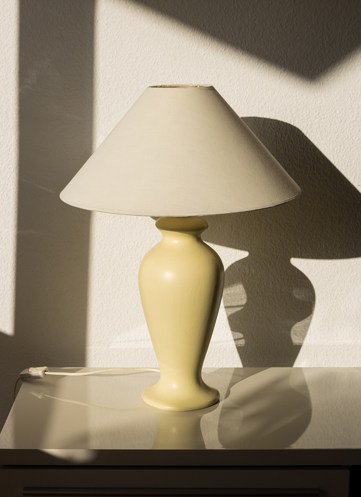

Objects for one strong moment a page.
Products drawn in code, photographs printed by a shader, and scenes that answer the pointer. A photograph leads where there is one. An object leads where there is none.

01 Print object
Cup and saucer
A porcelain cup of coffee on its saucer, the glaze in your accent. Click it to stir.
- Leads
- A tableware maker with no photographs
- As a print
- A software card about a morning
- GPU
- High while it turns, one frame at rest
Morning digest
One email at 8:00 with everything that changed overnight.
02 Print object
Bicycle wheel
A road wheel with a tan-wall tyre, an alloy rim and 24 spokes, the hub in your accent. Click it to spin it up.
- Leads
- A maker of wheels or hubs, never a whole bike
- As a print
- A card about speed or a mechanism
- GPU
- High while it turns, one frame at rest
Background sync
Runs every five minutes, whether the app is open or not.
03 Print object
Desk lamp
A balanced-arm desk lamp on chrome springs, the base and shade enamelled in your accent. Click it to switch it on.
- Leads
- A lighting maker with no photographs
- As a print
- A card about focus or working late
- GPU
- High while it moves, one frame at rest
Focus mode
Alerts wait until you switch it off.
04 Print object
Desk globe
A desk globe with the real coastlines, a brass meridian and a walnut stand. Its sea takes a blue or teal accent. Click it to spin.
- Leads
- A maker of globes or maps
- As a print
- A card about regions or shipping
- GPU
- High while it turns, one frame at rest
14 regions
Pick where your data lives. Move it later in two clicks.
05 Print object
Playing cards
A stack of playing cards, the ace of diamonds face up and the backs in your accent. Click to fan them out.
- Leads
- A maker of card or board games
- As a print
- A games card about a hand or a deal
- GPU
- High while it moves, one frame at rest
Fair draws
Every shuffle is logged, so any player can check a deal.
06 Photo print
Halftone photograph
One photograph in one ink: round dots on a 45° screen, clean paper in the light. Point at it and a loupe shows its colour.
- Use
- One photograph band on a design or software page
- Never
- A hero photograph, a cafe, a guesthouse
- GPU
- Low, one context, still at rest
Screens for print
Send any photograph to press as a one-ink halftone.
07 Photo print
Engraved photograph
Diagonal lines that swell in the shadows and bend over the forms, over a light wash of the photograph's colour. Point at it and the lines part.
- Use
- A tile whose subject is the photograph
- Never
- A hero photograph, a cafe, a guesthouse
- GPU
- Low, one context, still at rest
Line art from a photo
Turn a product shot into a plate for packaging.
08 Photo print
Dithered photograph
A three-colour grain from the photograph's deepest and most colourful tones. Point at it and the photograph develops through the grain.
- Use
- A games or AI page's one photograph
- Never
- A hero photograph, a cafe, a guesthouse
- GPU
- Low, one context, still at rest
Three colours, any picture
A grain that keeps a photograph readable in two inks and the paper.
09 Scene
Split reveal
One photograph, half of it printed as a halftone screen. The line follows the pointer; on a phone it follows a drag.
- Use
- A photo or design app, a device, a game's key art
- Never
- A place, a service, a product page
- GPU
- Low, drawn only while the line moves
Before and after
Drag the line to compare the print with the original.
10 Scene
Dither sequence
Two to six photographs that belong together, dithered and cut one to the next like a slow film. Move across it to pick a frame.
- Use
- A device from several sides, a game's scenes
- Never
- A random or mood set of pictures
- GPU
- Low, drawn only during a cut
Every version kept
Step back through earlier versions of a picture.
11 Scene
Dot object
An object cut out of its photograph and set in dots that keep its tones. Under the pointer the dots take its real colour.
- Use
- A thing shot on a plain ground, or a cut-out
- Never
- A busy or sunlit background
- GPU
- Low, one draw call while the loupe moves
Cut-outs in one click
The ground is read from the border and left out.
12 Scene
Exploded layers
One photograph as four printed sheets in perspective. Hover and they open apart, each named in the product's own words.
- Use
- Software that works in layers: imaging, maps
- Never
- Sheets named after the effects
- GPU
- Low, drawn only while it opens
Edits you can undo
Turn any layer off later without touching the rest.
13 Scene
Product turntable
A camera, a chair, a speaker or a cup, stepping round on a studio turntable. Move across it to turn it yourself.
- Use
- A kind of thing the software handles
- Never
- The client's own product
- GPU
- Low, drawn only while it steps
See it from every side
Check each piece from all angles before you rent it.